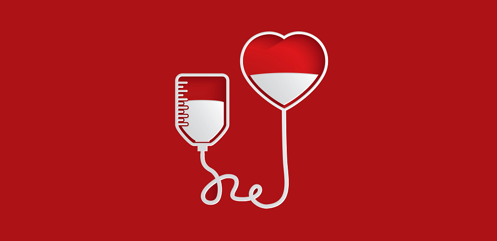
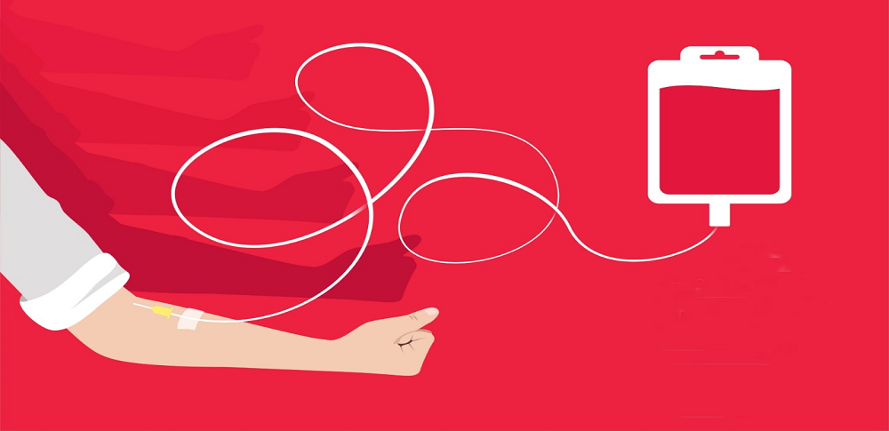

Lute contra o inimigo Estoque de Sangue Baixo!
Não importa se o seu poder é A, A-, B, B-, AB, AB-, O ou O-.
Todo poder é bem vindo!
.png)
Graças a outros doadores pude me recuperar de um acidente. Desde então tenho um compromisso sério com o hemocentro da minha região.
Eu achava que por ter tatuagem não poderia doar sangue. Agora sei que existe um intervalo a ser respeitado, mas que posso sim contribuir.

Acompanhando o jornal fiquei sabendo que os estoques estavam abaixo do esperado. Sou doadora universal então corri para o hemocentro mais próximo. É bom demais ajudar aqueles que necessitam.
É preciso criar o hábito de doarAtualmente, são coletadas no Brasil, cerca de 3,6 milhões de bolsas/ano, o que corresponde ao índice de 1,8% da população doando sangue. Embora o percentual esteja dentro dos parâmetros da Organização Mundial de Saúde (OMS), o Ministério da Saúde trabalha para aumentar este índice. O Ministério da Saúde reduziu a idade mínima de 18 para 16 anos (com autorização do responsável) e aumentou de 67 para 69 anos a idade máxima para doação de sangue no País. Alguns estados como São Paulo e o Distrito Federal fornecem vantagens para os doadores regulares de sangue. Existem leis que isentam da taxa de inscrição os doadores de sangue que quiserem prestar concursos públicos realizados pela Administração Direta, Indireta, Fundações Públicas e Universidades Públicas do Estado.
Fonte: saude.gov.br